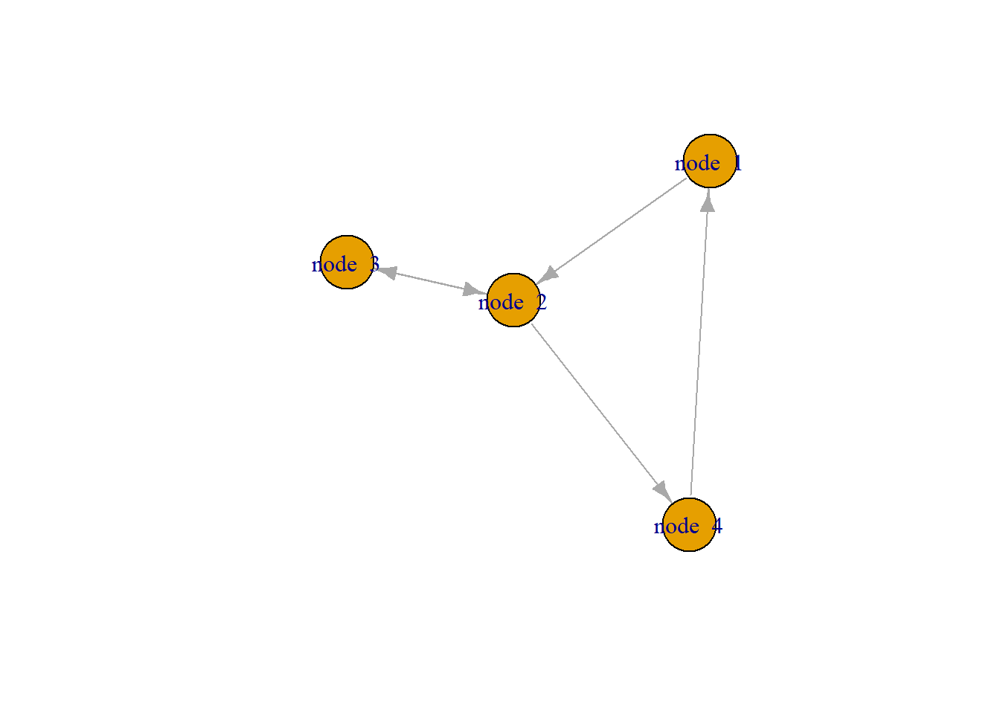

# Load libraries
library(tidyverse)
library(network)
library(tidygraph)
library(ggraph)
library(visNetwork)
library(networkD3)
library(dplyr)
library(docstring)UBCO-Curriucla-Analysis
Introduction to Network Analysis in R
A nice introduction to Network Analysis in R is given here
The major players in the network analysis space for R are the Statnet packages, tidygraph, igrpah. Interactive graphs can be created with the vizNetowrk and networkD3 packages. For an example of the some of the interactive visualizations we could make look here. There is also plenty of support for these visualization in Shiny so we do we eventually make a dashboard style took these will make an easy addition.
Next I follow the tutorial by Jesse Sadler to introduce working with networks in R.
Generally to create graphs you will need an adjacency matrix (for the network, igraph, and tidygraph packages) or an edge-list data frame for the tidyverse workflow. Edge-list dataframes can be converted to adjacency matrix and so we opt for their creation when doing network analysis.
Edge-list data frames have at least two columns: “from” and “to” columns for describing connections between nodes. Other columns may be added to describes attributes of nodes or weights for edges. Each node requires a unique identifier, generally an integer. An example Edge-list data frame:
edge_list <- tibble(from = c(1, 2, 2, 3, 4), to = c(2, 3, 4, 2, 1))
node_list <- tibble(id = 1:4, label = paste("node ", seq(1, 4)))
edge_list# A tibble: 5 × 2
from to
<dbl> <dbl>
1 1 2
2 2 3
3 2 4
4 3 2
5 4 1node_list# A tibble: 4 × 2
id label
<int> <chr>
1 1 node 1
2 2 node 2
3 3 node 3
4 4 node 4Let’s explore the various packages.
network
We create a network object from the edge list.
network <- network(
edge_list,
vertex.attr = node_list,
matrix.type = "edgelist",
ignore.eval = TRUE
)
network Network attributes:
vertices = 4
directed = TRUE
hyper = FALSE
loops = FALSE
multiple = FALSE
bipartite = FALSE
total edges= 5
missing edges= 0
non-missing edges= 5
Vertex attribute names:
id label vertex.names
No edge attributesThen we can visualize the graph. THe mode argument will use different algorithms to plot the graph.
plot(network, vertex.cex = 4, mode = "circle")
igraph
You need to remove the network package because there is a lot of overlap in the name space.
# Detatch network and load igraph
detach(package:network)
rm(network)
library(igraph)We need to convert our edge list to a form usable by igraph.
network <- graph_from_data_frame(
d = edge_list,
vertices = node_list,
directed = TRUE
)
networkIGRAPH 0e7d367 DN-- 4 5 --
+ attr: name (v/c), label (v/c)
+ edges from 0e7d367 (vertex names):
[1] 1->2 2->3 2->4 3->2 4->1The information for the graph description is shorthand for a few things. D is directed, N says we have a name attribute, the first - means not weight weighted, the second - means not bipartite, 4 is the number of nodes, 5 is the number of edges, attr tells use there are two node attributes, and a print out of all edges. We can also plot this graph and again layout is an argument to control the algorithm for plotting the network.
plot(network,
layout = layout_with_graphopt,
vertex.size = 30,
vertex.label.cex = 1,
edge.arrow.size = 0.8
)
tidygraph and ggraph
If we want to leverage the tidyverse workflow and ggplot we can use the tidygraph package. We first need to make a tbl_graph object.
network_tbl <- tbl_graph(
nodes = node_list,
edges = edge_list,
directed = TRUE
)
network_tbl# A tbl_graph: 4 nodes and 5 edges
#
# A directed simple graph with 1 component
#
# Node Data: 4 × 2 (active)
id label
<int> <chr>
1 1 node 1
2 2 node 2
3 3 node 3
4 4 node 4
#
# Edge Data: 5 × 2
from to
<int> <int>
1 1 2
2 2 3
3 2 4
# … with 2 more rowsThe output states Node Data is active. This means if you manipulate data in this object it will manipulate the Node Data table. Use the activate() function to switch to the other table in the object. Now we can plot our network in a ggplot style.
ggraph(network_tbl, layout = "graphopt") +
geom_node_point() +
geom_edge_link() +
geom_node_text(aes(label = label), repel = TRUE) +
theme_graph()Warning: Using the `size` aesthetic in this geom was deprecated in ggplot2 3.4.0.
ℹ Please use `linewidth` in the `default_aes` field and elsewhere instead.
You can also make arc graphs.
ggraph(network_tbl, layout = "linear") +
geom_edge_arc(alpha = 0.8) +
scale_edge_width(range = c(0.2, 2)) +
geom_node_text(aes(label = label)) +
labs() +
theme_graph()
Interactive visualizations
It is quite easy to turn our previously static graphs into interactive visualizations. visNetwork uses JavaScript to create these visualizations and has create documentation for increasing the interactivity of our graphs. We will use this visualization package for our analysis. Others however do exist like networkD3.
visNetwork(node_list, edge_list) %>%
visEdges(arrows = "middle")Curricular Analytics
The following is adapted from (Heileman et al. 2018).
Curriculum is modeled as a directed acyclic graph (DAG) where courses are nodes and requisite relationships between nodes are directed edges. Mathematically a curriculum graph is denoted \(G_c = V(V,E)\) where \(v_1,\dots,v_n \in V\) are courses and the directed edge \((v_i,v_j) \in E\) is a requisite from \(v_i\) to \(v_j\) that must be completed before enrollment in \(v_j\). Nodes in these graph are organized in columns representing each term in a curriculum. Edges down columns are co-requisites and edges across columns are pre-requisites.
With this framework of modeling comes a host of useful metrics for gaining insight about a curriculum graph’s structure. Next we outline a few of the metrics and provide functions for calculating them.
First we construct a graph to showcase the metrics.
edge_list <- tibble(from = c(1, 2, 1), to = c(2, 4, 3))
node_list <- tibble(id = as.character(1:4), label = paste0("v", seq(1, 4)))
coords <- matrix(ncol = 2, byrow = T, data = c(
1, 0,
2, 0,
2, 1,
3, 0
))
visNetwork(node_list, edge_list) %>%
visEdges(arrows = "middle") %>%
visIgraphLayout(layout = "layout.norm", layoutMatrix = coords)Delay Factor
Delay factor is a metric used to quantify the existent of long pathways through a curriculum graph. These longs paths indicate a chain of requisite relationships where if w a student were to fail a given course along the path they would suffer a heavily delayed graduation. The delay factor for a given node is the number of vertices in the longest path of \(G_c\) that contains the given node. An isolated node’s delay factor is defined to be 1 and means it can be taken in any term. We also calculate the total delay factor for \(G_c\) as the sum of all delay factors in the graph.
delay_factor <- function(edge_list,node_list){
#' Delay factor
#'
#' Calculates the delay factor for each node and the total delay factor of the curriculum graph. Delay factor is defined as the number of vertices in the longest path in G that pass through v. The function returns a list where bynode holds the delay factor for each node and total holds the delay factor for the graph.
#'
#' @param edge_list data frame containing the edge list of the graph.
#' @param node_list data frame containing the node list of the graph.
bynode <- data.frame(id = NA, df = NA)
network <- graph_from_data_frame(
d = edge_list,
vertices = node_list,
directed = TRUE
)
paths <- list()
for (v in as.numeric(node_list$id)) {
paths <- c(paths, all_simple_paths(network, from = v, mode = "out"))
}
for (v in as.numeric(node_list$id)) {
max_length <- 0
for (path in paths) {
if (v %in% as.vector(path) && max_length < length(as.vector(path))) {
max_length <- length(as.vector(path))
}
}
if(max_length == 0){
max_length <- 1
}
bynode <- rbind(bynode, data.frame(id = as.character(v), df = max_length))
}
bynode <- na.omit(bynode)
total <- sum(bynode$df)
list(bynode = bynode, total = total)
}df_df <- delay_factor(edge_list,node_list)
df <- df_df$bynode
node_list <- left_join(node_list, df, by = c("id" = "id"))
network <- graph_from_data_frame(
d = edge_list,
vertices = node_list,
directed = TRUE
)
visNetwork(node_list, edge_list,
submain = list(text = paste("Total df:",df_df$total))) %>%
visEdges(arrows = "middle") %>%
visIgraphLayout(layout = "layout.norm", layoutMatrix = coords) %>%
visEvents(selectNode = "function(properties) {
alert(' df: ' + this.body.data.nodes.get(properties.nodes[0]).df);}")Blocking Factor
Blocking factor is a quantity that captures a course’s ability to gatekeep other courses. That is, if you fail a course with a high blocking factor you are blocked from taking many other courses. The blocking factor of a node is the number of nodes reachable from the given node. The total blocking factor of the graph is the sum of all individual blocking factors.
blocking_factor <- function(edge_list,node_list){
#' Blocking factor
#'
#' Calculates the blocking factor for each node and the total blocking factor of the curriculum graph. The blocking factor of a node v is the number of nodes reachable from v. The function returns a list where bynode holds the blocking factor for each node and total holds the blocking factor for the graph.
#'
#' @param edge_list data frame containing the edge list of the graph.
#' @param node_list data frame containing the node list of the graph.
bynode <- data.frame(id = NA, bf = NA)
network <- graph_from_data_frame(
d = edge_list,
vertices = node_list,
directed = TRUE
)
paths <- list()
for (v in as.numeric(node_list$id)) {
paths <- c(paths, all_simple_paths(network, from = v, mode = "out"))
}
for(v in as.numeric(node_list$id)){
nodes_reachable <- c()
for(path in paths){
curr_path <- as.vector(path)
if(v %in% curr_path[1]){
nodes_reachable <- c(nodes_reachable, curr_path)
}
}
nodes_reachable <- unique(nodes_reachable)
nodes_reachable <- nodes_reachable[nodes_reachable != v]
bynode <- rbind(bynode, data.frame(id = as.character(v), bf = length(nodes_reachable)))
}
bynode <- na.omit(bynode)
list(bynode = bynode, total = sum(bynode$bf))
}bf_df <- blocking_factor(edge_list,node_list)
bf <- bf_df$bynode
node_list <- left_join(node_list, bf, by = c("id" = "id"))
network <- graph_from_data_frame(
d = edge_list,
vertices = node_list,
directed = TRUE
)
visNetwork(node_list, edge_list,
submain = list(text = paste("Total bf:",bf_df$total))) %>%
visEdges(arrows = "middle") %>%
visIgraphLayout(layout = "layout.norm", layoutMatrix = coords) %>%
visEvents(selectNode = "function(properties) {
alert(' bf: ' + this.body.data.nodes.get(properties.nodes[0]).bf);}")Centrality Factor
Centrality factor indicates how central a node is to a curriculum. A node is considered central if it requires many pre-requisite courses and is itself a pre-requisite to many courses. Heileman et al. says in curricular analytics we are greatly interested in how learning outcomes achieved in one course are used in later courses and we therefore wish to identify key central courses in these paths (2018). The centrality factor is meant to capture this and is defined as the number of nodes in all long paths that include the given node. A long path is defined to be a path with length greater than or equal to 3. Nodes who only fall on paths shorter than this are given a centrality of 0.
centrality_factor <- function(edge_list,node_list){
#' Centrality factor
#'
#' Calculates the centrality factor for each node. The centrality factor of a node v is the number of long paths containing v where a long path is one of length 3 or greater. The function returns a dataframe that holds the centrality factor for each node.
#'
#' @param edge_list data frame containing the edge list of the graph.
#' @param node_list data frame containing the node list of the graph.
bynode <- data.frame(id = as.numeric(node_list$id), cf = rep(0,length(node_list$id)))
network <- graph_from_data_frame(
d = edge_list,
vertices = node_list,
directed = TRUE
)
paths <- list()
for (v in as.numeric(node_list$id)) {
paths <- c(paths, all_simple_paths(network, from = v, mode = "out"))
}
for(path in paths){
curr_path <- as.vector(path)
if(length(curr_path) >= 3){
long_path_nodes <- curr_path[c(-1,-length(curr_path))]
for(node in long_path_nodes){
bynode[node,c("cf")] <- bynode[node,c("cf")] + length(curr_path)
}
}
}
bynode$id <- as.character(bynode$id)
bynode
}cf <- centrality_factor(edge_list,node_list)
node_list <- left_join(node_list, cf, by = c("id" = "id"))
network <- graph_from_data_frame(
d = edge_list,
vertices = node_list,
directed = TRUE
)
visNetwork(node_list, edge_list) %>%
visEdges(arrows = "middle") %>%
visIgraphLayout(layout = "layout.norm", layoutMatrix = coords) %>%
visEvents(selectNode = "function(properties) {
alert(' cf: ' + this.body.data.nodes.get(properties.nodes[0]).cf);}")Structural Complexity
Structural Complexity is a metric that assess the impact that curricular structure will have on a student’s journey through a curriculum. In simulations it was find that a high structural complexity correlated to decreased graduation rates. The structural complexity for a given node is a linear combination of its delay and blocking factors. The Structural complexity of an entire curriculum graph is the sum of all structural complexities.
structural_complexity <- function(edge_list,node_list){
#' Structural Complexity
#'
#' Calculates the structural complexity for each node and for the entire curriculum graph. The structural complexity is a linear combination of the delay and blocking factors.The function returns a list where bynode holds the structural complexity for each node and total holds the structural complexity for the graph.
#'
#' @param edge_list data frame containing the edge list of the graph.
#' @param node_list data frame containing the node list of the graph.
bf_df <- blocking_factor(edge_list,node_list)
bf <- bf_df$bynode$bf
df_df <- delay_factor(edge_list,node_list)
df <- df_df$bynode$df
bynode <- data.frame(id = node_list$id, sc = (bf + df))
list(bynode = bynode, total = sum(bynode$sc))
}edge_list <- tibble(from = c(1, 1, 1,3), to = c(2, 3, 4,5))
node_list <- tibble(id = as.character(1:5), label = paste0("v", seq(1, 5)))
coords <- matrix(ncol = 2, byrow = T, data = c(
1, 0,
2, 0,
2, 1,
2, 2,
3, 0
))
sc <- structural_complexity(edge_list,node_list)$bynode
node_list <- left_join(node_list, sc, by = c("id" = "id"))
network <- graph_from_data_frame(
d = edge_list,
vertices = node_list,
directed = TRUE
)
visNetwork(node_list, edge_list) %>%
visEdges(arrows = "middle") %>%
visIgraphLayout(layout = "layout.norm", layoutMatrix = coords) %>%
visEvents(selectNode = "function(properties) {
alert(' sc: ' + this.body.data.nodes.get(properties.nodes[0]).sc);}")Bayesian Networks
Bayesian Networks (BNs) are a machine learning model that in the context of curricular analytics can be used for knowledge discovery and lowering the structural complexity of a curriculum graph (Slim et al. 2021). Slim et al. showcased the use of BNs in curricula graphs as a means to statistically validate the restructuring of university programs through discovering latent nodes in the graph evaluating them using a likelihood-ratio test. They further mention the model’s capability to be used in the prediction of student grades.
BNs have much support within R and the text Bayesian Networks in R provides a good introduction to many of the concepts used in this analysis (Nagarajan, Scutari, and Lèbre 2013).
Background
Explanations and examples are adapted from (Scutari 2009).
Bayesian networks utilizes DAGs to model a set of random variables, i.e., for the set \(\mathbf{X}=\{X_1,\dots,X_p\}\) of random variables the DAG \(G=(\mathbf{V},\mathbf{A})\) is constructed where \(v_i \in \mathbf{V}\) corresponds to a random variable from our set \(\mathbf{X}\) and \(\mathbf{A}\) is the set of arcs (edges).
The DAG itself is a factorization of the joint probability distribution of \(\mathbf{V}\). This factorization follows from the Markov property of Bayesian networks: every random variable \(X_i\) directly depends only on its parents \(\Pi_{X_i}\) or
\[P(X_1,\dots,X_v)=\prod^v_{i=1}P(X_i|\Pi_{X_i})\text{ (for discrete variables)}\]
probability distributions exist for each node as a result of this factorization, called local probability distributions. The joint probability distribution for all nodes is called the global probability distribution.
Bayesian network model selection is done through learning the graphical structure of a Bayesian network and then estimating the parameters of the local distribution functions. It is most common to assume the local distributions are multinomial for discrete data which fits our use case.
BNs in R
library(bnlearn)Analysis of UBCO Data Science Curriculum
Setup
Our data set consists of course information from the data science program at UBCO. We have course codes, names, descriptions, and requisite relationships.
# Read in data
ubco <- read.csv("..\\data\\UBCO\\UBCO_Course_Calendar.csv")
str(ubco)'data.frame': 53 obs. of 6 variables:
$ Course.Code : chr "DATA 101" "CHEM 111" "CHEM 121" "MATH 100" ...
$ Course.Name : chr "Making Predictions with Data" "Principles of Chemistry I" "Atomic and Molecular Chemistry" "Differential Calculus with Applications to Physical Sciences and Engineering" ...
$ Course.Description: chr "Introduction to the techniques and software for handling real-world data. Topics include data cleaning, visualization, simulati "Stoichiometry, atomic and molecular structure, chemical periodicity, gases, liquids, solids, and solutions. Not open to student "Stoichiometry, atomic and molecular structure, chemical periodicity, gases, liquids, solids, and solutions. Required course for "Derivatives of elementary functions, limits. Covers applications and modelling: graphing and optimization. Credit will be grant ...
$ Prerequisite : chr "" "" "" "" ...
$ Corequisite : chr "" "" "" "" ...
$ Equivalents : chr "" "" "" "" ...With this we can construct degree pathways through our curriculum and graph them. Since there are many electives within our program there are many possible curriculum graphs. We will analyze the most and least structurally complex curricula and see what patterns emerge.
# Create list for storing pathways
Gc <- list()
for(i in 1:100){
# Generate degree pathway
pathway <-
data.frame(
Course.Code = NA,
Course.Name = NA,
Course.Description = NA,
Prerequisite = NA,
Corequisite = NA,
Equivalents = NA
)
# First Year
pathway <- rbind(pathway, subset(ubco, Course.Code == "DATA 101"))
samp <- sample(c("CHEM 111", "CHEM 121"), 1)
pathway <- rbind(pathway, subset(ubco, Course.Code == samp))
pathway <-
rbind(pathway, subset(ubco, Course.Code %in% c("MATH 100", "MATH 101")))
samp <- sample(c(TRUE, FALSE), 1)
if (samp) {
pathway <- rbind(pathway, subset(ubco, Course.Code == "ENGL 109"))
} else {
samp <- sample(
c(
"ENGL 112",
"ENGL 113",
"ENGL 114",
"ENGL 150",
"ENGL 151",
"ENGL 153",
"ENGL 154",
"ENGL 155",
"ENGL 156"
),
2
)
pathway <- rbind(pathway, subset(ubco, Course.Code %in% samp))
}
samp <- sample(c("PHYS 111", "PHYS 112"), 1)
pathway <- rbind(pathway, subset(ubco, Course.Code %in% samp))
samp <- sample(c("PHYS 121", "PHYS 122"), 1)
pathway <- rbind(pathway, subset(ubco, Course.Code %in% samp))
pathway <-
rbind(pathway, subset(ubco, Course.Code %in% c("COSC 111", "COSC 121")))
# Second Year
pathway <-
rbind(pathway, subset(
ubco,
Course.Code %in% c(
"MATH 200",
"MATH 221",
"STAT 230",
"COSC 221",
"COSC 222"
)
))
# Third and Fourth Year
pathway <-
rbind(pathway, subset(
ubco,
Course.Code %in% c(
"DATA 301",
"DATA 311",
"COSC 304",
"STAT 303",
"PHIL 331"
)
))
upper_year_data <-
c("DATA 310", "DATA 315", "DATA 405", "DATA 407", "DATA 410")
max_2_stat <- c("STAT 400", "STAT 401", "STAT 403", "STAT 406")
# TODO I don't include MATH 409 or PHYS 420
max_2_cosc_math_phys <-
c(
"COSC 303",
"COSC 322",
"COSC 329",
"COSC 344",
"COSC 407",
"COSC 421",
"MATH 303",
"MATH 307"
)
course <- c()
while (length(unique(course)) < 9) {
var <- sample(c("1", "2", "3"), 1)
if (var == 1) {
course <- c(course, sample(max_2_stat, 1))
} else if (var == 2) {
course <- c(course, sample(max_2_cosc_math_phys, 1))
} else if (var == 3) {
course <- c(course, sample(upper_year_data, 1))
}
}
pathway <-
rbind(pathway, subset(ubco, Course.Code %in% unique(course)))
pathway <- na.omit(pathway)
rownames(pathway) <- 1:nrow(pathway)
# Construct node and edge list
node_list <-
data.frame(id = rownames(pathway), label = pathway$Course.Code)
edge_list <- data.frame(from = NA, to = NA)
node <- "DATA 410"
for (node in node_list$label) {
str <- subset(pathway, Course.Code == node)$Prerequisite
course_code <- ""
if (str != "") {
course_code <- str_extract_all(str, "[A-Z]{4} [0-9]{3}")[[1]]
}
from <- rownames(subset(pathway, Course.Code == node))
to <- rownames(subset(pathway, Course.Code %in% course_code))
if (length(to) > 1) {
for (id in to) {
edge_list <- rbind(edge_list, data.frame(from = id, to = from))
}
} else {
edge_list <- rbind(edge_list, data.frame(from = to[1], to = from))
}
}
edge_list <- na.omit(edge_list)
# Get structural complexity
sc <- structural_complexity(edge_list, node_list)
# Store in list
results <- list(node_list = node_list, edge_list = edge_list, sc = sc)
Gc <- c(Gc, list(results))
}# Initialize variables for maximum and minimum values
max_total <- -Inf
min_total <- Inf
max_index <- NULL
min_index <- NULL
# Iterate through Gc to find max and min indices
for (i in seq_along(Gc)) {
total <- Gc[[i]]$sc$total
if (total > max_total) {
max_total <- total
max_index <- i
}
if (total < min_total) {
min_total <- total
min_index <- i
}
}
# Display the indices
print(paste("Index of maximum sc$total:", max_index))[1] "Index of maximum sc$total: 73"print(paste("Index of minimum sc$total:", min_index))[1] "Index of minimum sc$total: 44"Maximum Structural Complexity
# Specify node locations
coords <- matrix(ncol = 2, byrow = T, data = c(
1, 0,
1, 1,
1, 2,
1, 3,
1, 4, #
2, 0,
2, 1,
2, 2,
2, 3,
2, 4, #
3, 0,
3, 1,
3, 2,
3, 3,
3, 4, #
4, 0,
4, 1,
4, 2,
4, 3,
4, 4, #
5, 0,
5, 1,
5, 2,
5, 3,
5, 4, #
6, 0,
6, 1,
6, 2
))# node_list <- Gc[[max_index]]$node_list
# edge_list <- Gc[[max_index]]$edge_list
# sc_df <- structural_complexity(edge_list,node_list)
# cf_df <- centrality_factor(edge_list,node_list)
# bf_df <- blocking_factor(edge_list,node_list)
# df_df <- delay_factor(edge_list,node_list)
# node_list <- left_join(node_list, sc_df$bynode, by = c("id" = "id"))
# node_list <- left_join(node_list, cf_df, by = c("id" = "id"))
# node_list <- left_join(node_list, bf_df$bynode, by = c("id" = "id"))
# node_list <- left_join(node_list, df_df$bynode, by = c("id" = "id"))
# max_graph <- list(edge_list = edge_list, node_list = node_list, sc_total = sc_df$total, bf_total = bf_df$total, df_total = df_df$total)
# save(max_graph, file = "./maxGraph.RData")
load("..\\data\\rdata\\maxGraph.RData")
visNetwork(max_graph$node_list, max_graph$edge_list,submain = paste("Total Structural Complexity:",max_graph$sc_total,"Total Blocking Factor:",max_graph$bf_total,"Total Delay Factor:", max_graph$df_total)) %>%
visEdges(arrows = "to") %>%
visIgraphLayout(layout = "layout.norm", layoutMatrix = coords) %>%
visEvents(selectNode = "function(properties) {
alert(' sc: ' + this.body.data.nodes.get(properties.nodes[0]).sc + ' cf: ' + this.body.data.nodes.get(properties.nodes[0]).cf + ' bf: ' + this.body.data.nodes.get(properties.nodes[0]).bf + ' df: ' + this.body.data.nodes.get(properties.nodes[0]).df);}")Examining our maximally complex graph we can learn the set of key courses that are contributing most to our metrics. The total structural complexitity is 194, the total blocking factor is 80, and the total delay factor is 114.
The most central node in this graph by far is STAT 230 with a centrality factor of 138. In UBCO’s Data Science program is it the first statistics course many students encounter and is a preq-requisite to many 3rd and 4th year classes. Coming in at second is MATH 101 at 95. This also makes sense as it is Calculus 2 as it is a pre-requisite for STAT 230 and the Caluclus 3 class MATH 200. Finally COSC 221 is 3rd with 70. This course is discrete math and is a pre-requisite for STAT 230. This suggests as STAT 230 is so central and course that is its pre-requisite is also central.
The course with the greatest blocking factor is MATH 100 with a blocking factor of 17. This course is Calculus 1 and so it is likely unavoidable to for this course to have a high blocking factor. After all, Calulus is the foundation for many courses in a data science program and so it finds itself the root of many chains of edges.
The course with the greatest delay factor is tied for MATH 100, MATH 101, STAT 230, COSC 221, DATA 311, and DATA 410. These courses find themselves a part of the longest path in the graph of length 6.
The course with the largest structural complexity is MATH 100 with a score of 23. This is followed by MATH 101 at 20 and COSC 221 at 14. It is interesting that STAT 230 comes at 4th with only a strucutral complexity of 12. Because MATH 100 and 101 find them selves at the root of many paths it follow that they add quite heavily to the strucutral complexity of our graph.
These metrics suggest a revision of pathways including STAT 230, MATH 100, MATH 101, and COSC 221.
Here is a full table of the metrics
kable(max_graph$node_list)| id | label | sc | cf | bf | df |
|---|---|---|---|---|---|
| 1 | DATA 101 | 11 | 0 | 7 | 4 |
| 2 | CHEM 121 | 1 | 0 | 0 | 1 |
| 3 | MATH 100 | 23 | 0 | 17 | 6 |
| 4 | MATH 101 | 20 | 95 | 14 | 6 |
| 5 | ENGL 109 | 1 | 0 | 0 | 1 |
| 6 | PHYS 111 | 3 | 0 | 1 | 2 |
| 7 | PHYS 121 | 2 | 0 | 0 | 2 |
| 8 | COSC 111 | 13 | 0 | 9 | 4 |
| 9 | COSC 121 | 7 | 11 | 3 | 4 |
| 10 | MATH 200 | 10 | 39 | 5 | 5 |
| 11 | MATH 221 | 7 | 12 | 4 | 3 |
| 12 | STAT 230 | 12 | 138 | 6 | 6 |
| 13 | COSC 221 | 14 | 70 | 8 | 6 |
| 14 | COSC 222 | 6 | 14 | 2 | 4 |
| 15 | DATA 301 | 4 | 3 | 1 | 3 |
| 16 | DATA 311 | 7 | 34 | 1 | 6 |
| 17 | COSC 304 | 2 | 0 | 0 | 2 |
| 18 | STAT 303 | 7 | 24 | 2 | 5 |
| 19 | PHIL 331 | 1 | 0 | 0 | 1 |
| 20 | STAT 403 | 5 | 0 | 0 | 5 |
| 21 | STAT 406 | 5 | 0 | 0 | 5 |
| 22 | COSC 303 | 4 | 0 | 0 | 4 |
| 23 | COSC 322 | 4 | 0 | 0 | 4 |
| 24 | COSC 344 | 4 | 0 | 0 | 4 |
| 25 | DATA 405 | 5 | 0 | 0 | 5 |
| 26 | DATA 410 | 6 | 0 | 0 | 6 |
| 27 | DATA 310 | 5 | 0 | 0 | 5 |
| 28 | DATA 315 | 5 | 0 | 0 | 5 |
Minimum Structural Complexity
# Specify node locations
coords <- matrix(ncol = 2, byrow = T, data = c(
1, 0,
1, 1,
1, 2,
1, 3,
1, 4,
2, 0,
2, 1,
2, 2,
2, 3,
2, 4,
3, 0,
3, 1,
3, 2,
3, 3,
3, 4,
4, 0,
4, 1,
4, 2,
4, 3,
4, 4,
5, 0,
5, 1,
5, 2,
5, 3,
6, 0,
6, 1,
6, 2,
6, 3
))# node_list <- Gc[[min_index]]$node_list
# edge_list <- Gc[[min_index]]$edge_list
# sc_df <- structural_complexity(edge_list,node_list)
# cf_df <- centrality_factor(edge_list,node_list)
# bf_df <- blocking_factor(edge_list,node_list)
# df_df <- delay_factor(edge_list,node_list)
# node_list <- left_join(node_list, sc_df$bynode, by = c("id" = "id"))
# node_list <- left_join(node_list, cf_df, by = c("id" = "id"))
# node_list <- left_join(node_list, bf_df$bynode, by = c("id" = "id"))
# node_list <- left_join(node_list, df_df$bynode, by = c("id" = "id"))
# min_graph <- list(edge_list = edge_list, node_list = node_list, sc_total = sc_df$total, bf_total = bf_df$total, df_total = df_df$total)
# save(min_graph, file = "./minGraph.RData")
load("../data/rdata/minGraph.RData")
visNetwork(min_graph$node_list, min_graph$edge_list,submain = paste("Total Structural Complexity:",min_graph$sc_total,"Total Blocking Factor:",min_graph$bf_total,"Total Delay Factor:", min_graph$df_total)) %>%
visEdges(arrows = "middle") %>%
visIgraphLayout(layout = "layout.norm", layoutMatrix = coords) %>%
visEvents(selectNode = "function(properties) {
alert(' sc: ' + this.body.data.nodes.get(properties.nodes[0]).sc + ' cf: ' + this.body.data.nodes.get(properties.nodes[0]).cf + ' bf: ' + this.body.data.nodes.get(properties.nodes[0]).bf + ' df: ' + this.body.data.nodes.get(properties.nodes[0]).df);}")Examining the minimally complex graph we see quite a large reduction in the total metrics. The total structurcal complexity is 148, the total blocking factor is 55, and the total delay factor is 93.
However the course with the highest centrality factor is once again STAT 230 at 110; the courses with the highest blocking factors are MATH 100 (14), MATH 101 (10), adn COSC 221 (6); the courses with the highest delay factors are MATH 100, MATH 101, MATH 200, STAT 230, COSC 221, DATA 311, STAT 303, STAT 401, STAT 403, COSC 421, DATA 407, and DATA 315 all at 5; and the courses with the greatest structural complexity are MATH 100 (19), MATH 101 (15), and COSC 221 (11).
These results tell us that while upper year electives can vary and reduce the over all metric scores, there are common courses who contribute the most to complexity. Based on this restructuring is need surronding STAT 230 and COSC 221. Since STAT 230 leads in centrality by more than double across both graphs it is a course that earns increased focus and dedication of resoures. Another option for STAT 230 would be the creation of new courses to lessen its affect as a bottleneck. It is unlikely much can be down with MATH 100 and MATH 101 as they are students’ first introduction to Calculus and very foundational to all courses in the curriculum though further exploration is certainlty warranted.
Here is a full table of the metrics
kable(min_graph$node_list)| id | label | sc | cf | bf | df |
|---|---|---|---|---|---|
| 1 | DATA 101 | 9 | 0 | 6 | 3 |
| 2 | CHEM 121 | 1 | 0 | 0 | 1 |
| 3 | MATH 100 | 19 | 0 | 14 | 5 |
| 4 | MATH 101 | 15 | 72 | 10 | 5 |
| 5 | ENGL 109 | 1 | 0 | 0 | 1 |
| 6 | PHYS 111 | 3 | 0 | 1 | 2 |
| 7 | PHYS 122 | 2 | 0 | 0 | 2 |
| 8 | COSC 111 | 9 | 0 | 6 | 3 |
| 9 | COSC 121 | 4 | 3 | 1 | 3 |
| 10 | MATH 200 | 8 | 25 | 3 | 5 |
| 11 | MATH 221 | 4 | 3 | 1 | 3 |
| 12 | STAT 230 | 10 | 110 | 5 | 5 |
| 13 | COSC 221 | 11 | 52 | 6 | 5 |
| 14 | COSC 222 | 3 | 0 | 0 | 3 |
| 15 | DATA 301 | 2 | 0 | 0 | 2 |
| 16 | DATA 311 | 5 | 0 | 0 | 5 |
| 17 | COSC 304 | 2 | 0 | 0 | 2 |
| 18 | STAT 303 | 7 | 24 | 2 | 5 |
| 19 | PHIL 331 | 1 | 0 | 0 | 1 |
| 20 | STAT 400 | 1 | 0 | 0 | 1 |
| 21 | STAT 401 | 5 | 0 | 0 | 5 |
| 22 | STAT 403 | 5 | 0 | 0 | 5 |
| 23 | COSC 329 | 1 | 0 | 0 | 1 |
| 24 | COSC 407 | 2 | 0 | 0 | 2 |
| 25 | COSC 421 | 5 | 0 | 0 | 5 |
| 26 | MATH 307 | 3 | 0 | 0 | 3 |
| 27 | DATA 407 | 5 | 0 | 0 | 5 |
| 28 | DATA 315 | 5 | 0 | 0 | 5 |
The difference in elective coruses that caused the total metric scores to be so different are given below.
The courses in the max graph that are not found in the min graph are:
idx <- !(max_graph$node_list$label %in% min_graph$node_list$label)
kable(max_graph$node_list$label[idx])| x |
|---|
| PHYS 121 |
| STAT 406 |
| COSC 303 |
| COSC 322 |
| COSC 344 |
| DATA 405 |
| DATA 410 |
| DATA 310 |
The courses in the min graph that are not found in the max graph are:
idx <- !(min_graph$node_list$label %in% max_graph$node_list$label)
kable(min_graph$node_list$label[idx])| x |
|---|
| PHYS 122 |
| STAT 400 |
| STAT 401 |
| COSC 329 |
| COSC 407 |
| COSC 421 |
| MATH 307 |
| DATA 407 |
References
Heileman, Gregory L, Chaouki T Abdallah, Ahmad Slim, and Michael Hickman. 2018. “Curricular Analytics: A Framework for Quantifying the Impact of Curricular Reforms and Pedagogical Innovations.” arXiv Preprint arXiv:1811.09676.
Nagarajan, Radhakrishnan, Marco Scutari, and Sophie Lèbre. 2013. “Bayesian Networks in r.” Springer 122: 125–27.
Scutari, Marco. 2009. “Learning Bayesian Networks with the Bnlearn r Package.” arXiv Preprint arXiv:0908.3817.
Slim, Ahmad, Gregory L Heileman, Chaouki T Abdallah, Ameer Slim, and Najem N Sirhan. 2021. “Restructuring Curricular Patterns Using Bayesian Networks.” In EDM.